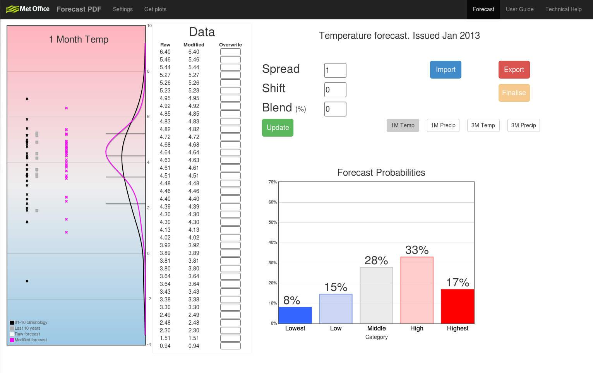
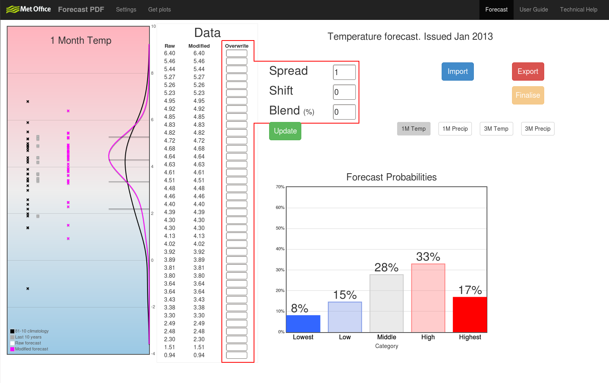
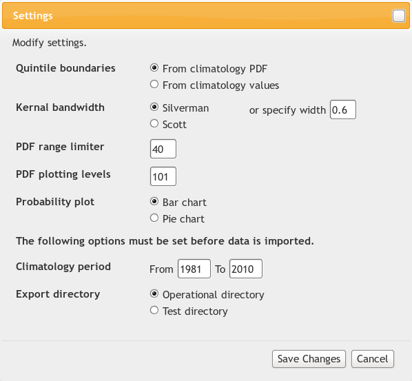

Introduction
The purpose of this tool is to create and modify probability density functions (PDFs) of the monthly and seasonal forecasts.
This user guide will guide you through how to use each of the capabilities.
Getting started
In most cases, it is normal to get started straight away by importing data. However, it may be worth checking the settings before hand (particularly the climatological period as this can not be updated once the data has been imported).
Import data
Start by clicking . This opens a new window where you can select which data to import.
There are 2 options:
- Month - This must be the month in which the forecast is issued - which is always the month before the first forecasted month. For example, a forecast for the 3 month period from January to March (JFM) is issued in December, therefore December must be selected.
- Year - Like with the month, this must be the year the forecast was issued. If in the example above JFM was in the year 2014, the issue month would be December 2013, therefore 2013 must be given.
Once you are happy with your selection, press to import the data.
What's displayed
Once the data has been imported, the page should look something like this...
Let's look at the main features more closely...
PDF plot
The following image provides an overview of the data displayed on the PDF plot.
- Climatology - These are the observations from a given set of years, for the forecasted period. They are used as a reference to the normal conditions of the period at a particular location (the UK in this case). In this example, 30 years (1981-2010) are used. The climatological period can be changed in settings.
- Last 10 years - These are the observations from the last 10 years for the forecasted period.
- Forecast members - These are the bias corrected forecast members which the model has produced. If modification is done, these point will shift.
- Forecast PDF - This is the PDF calculated from the forecast members.
- Climatology PDF - This is the PDF calculated from the climatology.
- Quintile boundaries - These are the boundaries which split the climatology into 5 equally sized bins. Note, the boundaries can be calculated by equally splitting either the actual climatology values or the area under the climatology PDF. The prefered method can be selected in settings.
The plot can also be interacted with. Hovering over a climatology or last 10 year point will reveal its value and year. Hovering over a forecast member or a quintile boundary (where it meets the right axis) will reveal its value.
Data
The data section contains 3 columns.

- Raw - These values will never change, they are the forecast values as they are imported.
- Modified - These are the values which are plotted and exported. They are the resulting forecast values after all modification.
- Overwrite - Here is where one method of modification can be performed. By entering a value into a text box (and pressing ), the corresponding forecast value will be overwritten (the Modified column will update). Note, to reset the value, clear the text box and press .
Forecast probabilities
The percentage of the forecast PDF that falls into each of the 5 categories (defined by the quintile boundaries) represents the resulting forecast probability for each category. By default, this information is displayed in a bar chart...
The option to display the probabilities in a pie chart is also available and can be selected in settings.
A forecast of climatology (normal) would put 20% into each category. By comparing a forecasted percentage with this normal 20%, a category can be defined to have a raised or reduced probability of occurring.
Data tabs
There are 4 tabs to switch between.
Clicking a tab imports the given period and variable. Any modifications made on one tab are saved locally when switching to another. This means, if returning to a tab, any previous modifications are reimplemented so you can carry on where you left off.
Note, data is only saved to file when is pressed. Remodifying can still be done after this and re-exporting will simply overwrite the previous saved data.
Modifing data
There are 4 ways in which to modify the forecast data directly.
- Spread - Increase or decrease the spread of the forecast values. Each value's distance from the mean is multiplied by the given spread value (meaning negative values can be used to invert the forecast, but hopefully that is never needed!).
- Shift - Shift all forecast values by the given amount.
- Blend - Blend the forecast values towards the climatological distribution. How much to blend is chosen by giving a percentage. This works by calculating how much shift and spread are needed to move the forecast values towards a climatological distribution of 20% in each category. Note, blend takes priority over shift and spread. For example, if 100% blend was given, any values in shift and spread would have no effect (as these would then move the forecast distribution away from climatology).
- Overwrite - Any forecast value can be overwritten (see Data for more details). Overwrite takes priority over all other modifications meaning the given value will not change.
After selecting any combination of modification, press to implement the changes. The update will change the forecast values in some way, and this change is reflected on the PDF plot and in the 'Modified' column of Data. To reset any modifications to their default (i.e. having no effect) just clear its text box.
Settings
To access the settings, click the link at the top of the page...
This will open a new window where the settings can be changed.
There are 7 settings that can be changed.
- Quintile boundaries - Choose whether the quintile boundaries are calculated by equally splitting the area under the climatology PDF or equally splitting the climatology values.
- Kernal bandwidth - The PDFs are created by converting each value/member into a Gaussian distribution. These distributions are called the kernals and are summed together to create the final PDF. Changing the kernal distributions changes the PDF. The bandwidth of a kernal refers simply to its spread. A large bandwidth results in kernal distributions with wide tails, which results in a smoother (and wider) PDF.
Small bandwidths mean taller and thinner kernals, which means a more detailed but less smooth PDF. There are 3 choices in bandwidth selection:
- Silverman - The bandwidth is calculated for you using Silverman's rule (Silverman, 1986).
- Scott - The bandwidth is calculated using Scott's rule (Scott, 1992).
- Specify width - Enter a specific value, this is useful if direct comparisons with other forecasts need to be made.
- PDF range limiter - This value is used to determine where to stop drawing the PDF tails. The given value is used to calculate how close to 0 the PDF must be to stop (the PDF theoretically never reaches 0). The larger the value, the closer to 0, meaning the PDF will extend further, increasing the range. Changing this has no effect on probabilities, only how the PDF looks, so feel free to experiment.
- PDF plotting levels - A PDF is a function. To plot it, x values must be given to the function to produce y values. The number of plotting levels is simply how many x values are fed to the function along the range. The more levels, the smoother the plot will look. Like with the range limiter (above), this only affects the visual (as any calculations use the actual function, not these xy values).
- Probability plot - Choose whether to display the resulting forecast probabilities on a bar chart (default) or pie chart.
- Climatology period - Choose the period which acts as the reference to normal conditions. In general a 30 year period is large enough to represent the true spread and small enough to exclude any trends.
- Raw data only - If ticked (default), only data before any previous modification is read in. If unticked, the lastest version of data is read in, i.e. if data has been previously modified, this version is imported - with no reference to the unmodified data - if no modified data exists, raw data is imported.
Note, all but the climatology period and the raw data only option can be changed and updated after loading in the data, use to implement the changes.
Exporting
Once you are happy with a forecast, simply press and the data for that variable and period (given by the current data tab) will be saved to file. The file location is then displayed on screen.
The plots are also available to download. Use the 'Get plots' link at the top of the page...
There are 2 options.
- Probability chart - This refers to graphic displaying the probabilities, either the (default) bar chart or pie chart. Change which in the settings.
- PDF plot - The main plot with the PDFs.